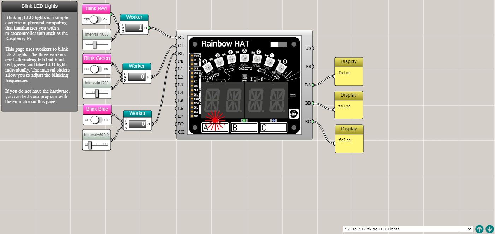
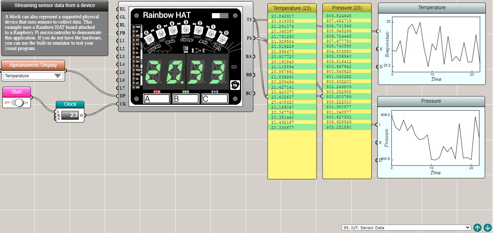
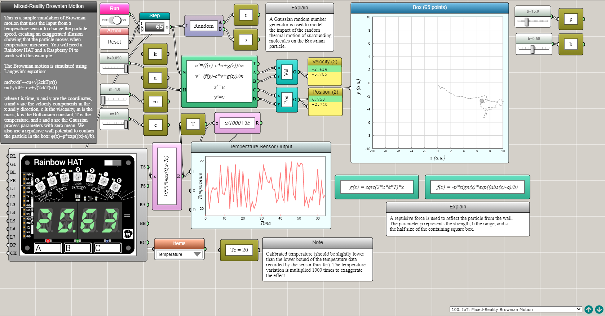

Physical Computing with iFlow: Rainbow HAT
Connect iFlow diagrams to the Rainbow HAT for Raspberry Pi — blink LEDs, stream sensors, and drive simulations from real hardware.
To visualize computational thinking with real-world objects, iFlow provides extensions to physical computing. This page shows a few examples based on the Rainbow HAT for Raspberry Pi, such as blinking a LED light or streaming sensor data to display in a graph. A more complex example shows how the temperature data from the sensor can be used to speed up or slow down a Brownian particle. By default, users will interact with a Rainbow HAT emulator, which is also referred to as the digital twin of the Rainbow HAT. Users can sync the digital twin with the real Rainbow HAT board. In that case, they will be able to remotely program the hardware. Through iFlow, a remote button can also trigger changes in an iFlow program. For example, the momentary buttons on the Rainbow HAT can be programmed to play different notes on the computer when pressed.


